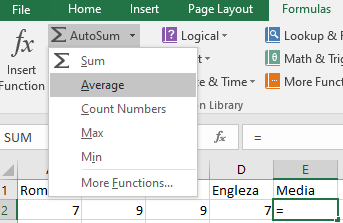

F I Ş A Nr. 3
Introducerea formulelor şi funcţiilor
Microsoft Excel este un program de calcul tabelar.Actuala versiune disponibilă este Microsoft Excel 365 — pentru Windows — şi Microsoft Excel 2016 — pentru Mac OS.
Celula reprezintă componenta fundamentală a unei foi de calcul în Excel.O celulă în Excel este alcătuită din mai multe componente importante, cum ar fi:
- Adresa celulei: reprezintă identificatorul unic al unei celule şi este format din litera corespunzătoare coloanei şi numărul rândului.
- Conţinutul celulei: poate fi un număr, text, o formulă sau o funcţie.
- Formatul celulei: determină modul în care conţinutul este afişat, cum ar fi formatul valutar, formatul dată sau formatul text.
- Stilurile celulei: includ proprietăţi cum ar fi fontul, culoarea de fundal, alinierea şi bordurile.
- Valorile celulelor dependente: dacă o celulă conţine o formulă, aceasta poate folosi valorile celulelor dependente pentru a calcula rezultatul.
1. Sortarea datelor dintr-o coloană.
- Selectaţi coloana ce doriţi să o sortaţi
- În fila Pagină de pornire(Home), în grupul Editare(Editing), faceţi clic pe Sortare & Filtrare (Sort & Filter).
- Se alege Sort A to Z dacă se doreşte sortarea crescătoare sau Sort Z to A dacă se doreşte sortarea descrescătoare

2. Introducerea formulelor.
- Daţi clic pe celula în care vreţi sa introduceţi formula.
- Tastaţi semnul = , tastaţi formula, şi apăsaţi tasta Enter.
- Exemplu: Dacă introducem in celula C1 formula =A1-B1 , după apăsarea tastei Enter în celula C1 va fi afişat rezultatul 9 ca diferenţă intre numărul 23 din celula A1 şi numărul 14 din celula B1, adică 23-14=9
3. Introducerea formulelor din librăria de funcţii.
- Daţi clic pe celula în care vreţi sa introduceţi formula.
- In fila Formule (Formulas), în grupul Librarie formule(Function Library) daţi clic pe AutoSum, alegeţi o formulă din listă, stabiliţi argumentele funcţiei (Function Arguments) şi daţi OK.

- Exemplu: Dacă introducem in celula E2 funcţia AVERAGE (media) si alegem ca argument al funcţiei intervalul (A2:D2) , în celula E2 va fi afişată media notelor de la A2 la D2.

4. Copierea unei funcţii sau formule.
Se selectează celula care conţine funcţia (formula) → Se poziţionează pointerul mouse-ului în colţul dreapta jos al celulei până când pointerul se transformă într-o cruce neagră +→ se apasă butonul stâng şi cu el ţinut apăsat ne deplasăm pe rândul de celule unde dorim să copiem funcţia (formula).
5. APLICAŢIE:
- Descarcaţi fişa de lucru funcții în excel
- Realizaţi un tabel cu orarul clasei
- Modificaţi lăţimea coloanelor pentru a se potrivi cu conţinutul
- Setaţi înălţimea rândurilor de mărime 25
- Adăugaţi o coloană în faţa primei coloane în care scrieţi intervalul orar
- Salvaţi registrul realizat
- Sortaţi datele din coloane ascendent şi descendent
- Formataţi textul folosind diferite tipuri şi mărimi de font, diferite efecte (bold, italic, underline), diferite culori pentru fundal şi font.
- Borduraţi tabelul şi salvaţi fişierul pe partiţia C cu numele ORAR